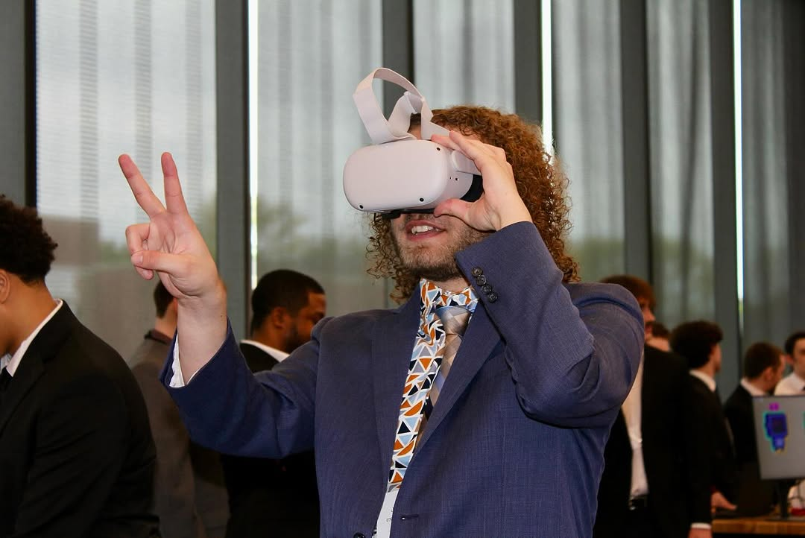
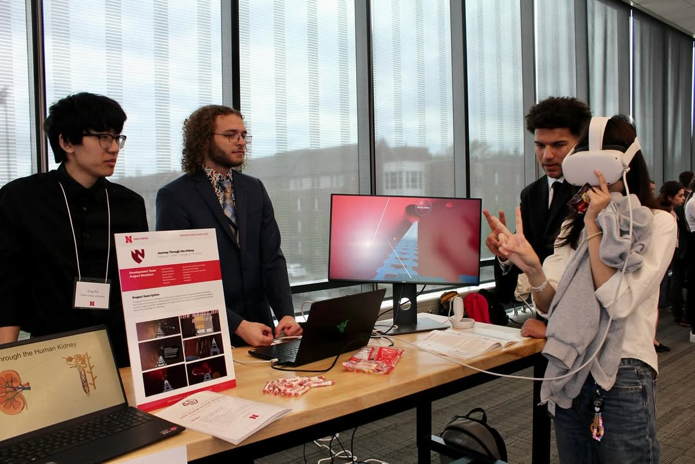
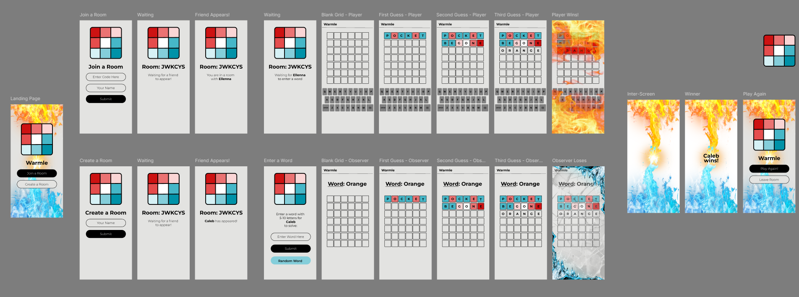
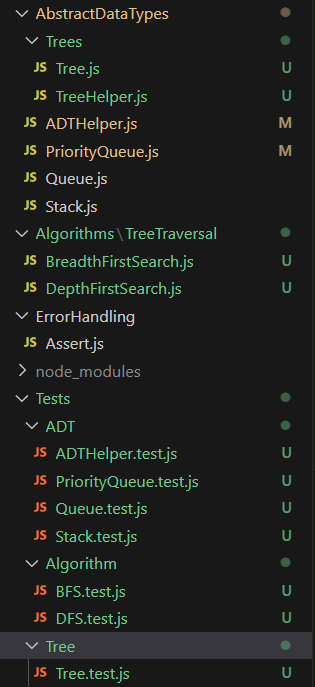

Hello, and welcome to my website showcasing some of my accomplishments and expierence. I'm currently studying at The University of Nebraska-Lincoln to obtain a Bachelor degree for Software Engineering graduating in december 2025.
Below i've included overviews for some of my projects and work expierence. Please understand that this is a work in progress, so their may be some bugs in place.

Jacob Amisano
Software Engineer / VR enthusiast
SRC: UNL Senior Design Showcase 2024-2025 | UNMC CoN Journey Through the Kidney
Projects
Below are some of the projects I've developed, both alone and in groups. If a project was developed by multiple people including myself, it will be specified in the description of the project. If you are a prospective employer and have any questions regarding any of my projects listed below, feel free to reach out to me using my contact information available at the bottom of the page.
Abyssmal is an underwater survival horror game with some roguelike elements that was developed in Spring 2025. This project was a collaborative effort between myself, 2 other computing students,
and two art students focusing on making the models, animations, audio and terrain. This was a great expereince and really put into perspective time constraints while planning our project.
On average close to 15 hours a week were spent working on this project.
The game is developed using Unity and Steam VR and has features such as omni-directional simulated swimming movement, upgradeable stats and weapons to help the player survive,
and an oxygen timer for how long they can be in a level. The goal of the game is to find your research partner who was lost at sea. As you progress deeper through a variety of levels,
the player is introduced to story elements and new enemies to keep them on their toes.
A wide variety of enemies exist in the game and follow one of three formats being a swimming-melee, swimming-ranged, or ground-melee. Each of the swimming enemies have omnidirectional movement
and track the player. When the player enters their range, they begin to attack whether that be a delayed melee dash attack, or particle-system based ranged attack dealing damage over time.
We wanted the player to have fun avoiding the enemies, so our main way to avoid damage is utilizing the movemnt built in swimming around to avoid enemies as they get close.
The main features I worked on were implementing menu functionality, weapons (and a custom reloading feature), handling damage between weapons and enemies along with handling their deaths.
Weapons shoot out new projectiles that self destroy after a few seconds or on collision. For our reloading functionality, an ammo pouch follows the player's hip, that when interacted with
their left hand spawns in a magazine for the equipped object. My favorite, the APS Rifle, is setup so the magazine also ejects when it empties or introducing a new magazine when it is below full.
A full gameplay video is also available below if you'd like to see more
UNMC College of Nursing Journey Through the Kidney - August 2024-May 2025
The Journey through the kidney project was developed for UNMC, XRenegades, and
Curio XR as a part of my seecond senior capstone project by myself and 5 other computing students.
We aimed to build upon the previous year's Heart Tour project by implementing
an immersive tour throughout the kidney and nephron. This project was developed using Unity and the Open XR VR development plugin.
Our project is exclusively hand-tracking based, so controllers aren't needed. A peace sign gesture is used to move forward and backwards depending on whether its facing away or towards the player.
A pinching gesture with an open palm can be used to interact with our "Checkpoint Orbs" placed throughout the tour that have a description of the player's location, key for particles present, and
mini-models for both the kidney and nephron. Each of these mini-models are moveable by the player, and show the player's current location in the respective model. Throughout the tour particles
such as proteins, water, blood cells, and waste are present and change depending on the location.
The checkpointed parts of the tour include the Renal Artery, Arterioles, Peritubular Capillaries, Glomerulus, Proximal Tubule, Descending/Ascending Loop of Henle, Distal Tubule, Collecting Duct,
Aquaporins, Bladder, and Active Transport.

User Playing our Tour
SRC: UNL Senior Design Showcase 2024-2025
Here you can see one of our players going through our tour using a peace sign gesture to move forward near the start of the kidney.
Below is a presentation given by the Product and Development managers for the project.
Also Uretors would normally be between the collecting duct and bladder, but due to time constraints our project didn't account for these.
Warmle
Warmle is a website developed as a part of my software architecture course co-developed with 4 other students. The goal of the site is to provide a two player alternative to the popular game Wordle. In this setting one player inserts a word, while the other player is trying to guess it. As the second player guesses, they're given feedback in the form of red and blue colors on each letter following the idea of warmer (more red) being better than cold.

Know Your Well 2.0
The Know Your Well 2.0 app was developed for Nebraska Water Center as a part of my 2023-2024 senior design project. This is my first of two projects. The application utilzes a variety of technologies but is primarily web based and is in the form of a progressive web application (PWA) allowing the user to install a local variant on their phone. The apps' primary function is to allow students and teachers enter water-well information to then be stored on an Azure backend. This information is then used by Know Your Well as a centralized source of information as they recieve water samples from other sources for said wells. Some of the features my team implemented include Single Sign On (SSO), Offline handling, CSV exporting for files, searching existing well entries, and many more.
Lincoln Weather App
The Lincoln weather app was developed as a part of my final project for Meteorology 100 in my sophmore year of college. The goal of this project was to have an automated determination output for sports such as football, baseball, and soccer. The application uses hard-coded coordinates of popular lincoln stadiums to send a request to the OpenWeather Connector API which returns weather data for these locations. The application then uses an algorithm to rate the given weather for the sport as "Good", "Great", "Bad", or "Canceled" and returns a screen with these ratings with their respective sports. Within this project I collaborated with 4 other students. I was responsible for helping with the visual elements of this project, and assisting with the weather API.
Personal JS Library
This is a personal Javascript library currently under development aimed to provide a central hub for a variety of common programming practices ranging from ADT implementation to common algorithms such as tree searches. While developing this library, i've aimed to keep things abstract and modular for ease of use in both development and testing. This project has been a great help, not only having this implementation at hand, but has also helped me grow my understanding of more advanced algorithms through implementing and testing for validity.

Work Experience
I hope to expand my knowledge over software development fields through a variety of internships while pursuing my degree in Software Engineering from The University of Nebraska-Lincoln.
Curio XR: Software Engineering Intern
While working at Curio XR, I was responsible for completing stories directly correlated to their Agile Scrum process for their main development platform. I mainly worked to fix bugs within their development platform and client portal. I collaborated with 9 other team members on the development team.
Ameritas: Identity Security Intern
At Ameritas, I've had the opportunity to develop several processes and improve upon existing workflows to help with automation inside their Identity Access Management (IAM) system. Through some of these projects I've been able to improve my knowledge over IAM principles, Azure, and common languages such as JavaScript, XML, and Powershell.
Firespring: Software Engineering Intern
While working at Firespring, I was responsible for completing stories directly correlated to their Agile Scrum process for their main development platform. I mainly worked to fix bugs within their development platform and client portal. I collaborated with 9 other team members on the development team.
Woodlands at Hillcrest: Server
The Woodlands at Hillcrest has rebranded to Aviva Woodlands after I left.
While at the woodlands my responsibilities included but were not limited to, cleaning, serving residents, communicating efficiently with coworkers, and serving residents. The Woodlands was an amazing experience for me, between my coworkers,
Feedback
Please feel free to contact me at jacob.portfolio.mailserver@gmail.com with any questions, comments, or concerns. Normally I'd have a form input sending emails, but due to hosting
constraints I currently can't.